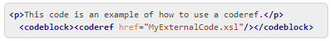

Adding Syntax Highlights for Codeblocks in the Output
Syntax Highlighting makes it easier to read the semantics of the structured
content by displaying each type of code (language) in different colors and fonts. Oxygen XML Editor provides the ability to add syntax highlights in codeblocks for DITA to
PDF or HTML-based output through the use of the @outputclass attribute and a
variety of predefined values are available.
To provide syntax highlighting in the codeblocks that appear in the output, add the
@outputclass attribute on the <codeblock> element and
set its value to one of the predefined language values. The Content Completion
Assistant offers a list of the possible values when adding the
@outputclass attribute in Text mode but there are
also two very simple ways to set the value in Author mode:- Select the
<codeblock>element in the editor and in the Attributes view, click on the Value cell for the@outputclassattribute and select one of the predefined values (for example,language-xml). - Select the
<codeblock>element in the editor and use the Alt + Enter keyboard shortcut to open the in-place attributes editor window. Then select one of the predefined values from the Value drop-down menu.
The predefined values that can be selected are:
- language-bourne
- language-c
- language-cpp
- language-csharp
- language-css
- language-ini
- language-java
- language-javascript
- language-json
- language-lua
- language-perl
- language-php
- language-python
- language-ruby
- language-sql
- language-xml
- language-xquery
Attention: It is recommended that you do not add inline elements in the codeblocks
when using this
@outputclass attribute, as it may lead to improper
highlighting.Example:
This
codeblock:
<codeblock outputclass="language-xml"> <p>This code is an example of how to use a coderef.</p> <codeblock><coderef href="MyExternalCode.xsl"/></codeblock> </codeblock>
would look like this in the output:
